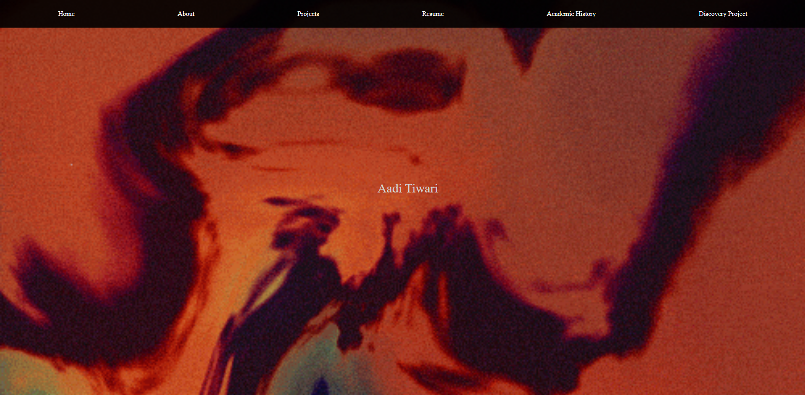

Projects
The images are links to the final technical pieces of work, with the accompanying text containing details of how each project came to be in the first place.

I began working on this project in February 2023, during my 11th grade of high school. It started out as a science fair project on the efficiacy of various quantum-classical hybrid time series forecasting methods, but I realized one of the methods, Quantum GANs, I had implemented in a pretty unique way.
I messaged some QML researchers about it asking if they thoughtI could pursue researching this model with their guidance, and the rest is history! Clicking the image will take you to the conference paper presented at ESREL2024.
Clicking this link will take you to a much more revised version focusing on the usage of HPC's and train/test split parameterization for the QGAN that was intended for journal publication until I decided to stop working on the project in focus of college and other research endeavors.
Explored topics: Variational Quantum Circuits, Time Series Forecasting, High Performance Computing, Bayesian Optimization, publishing in conferences

I began working on this in the first quarter of my first year of college. I wanted to pivot from the more software based projects I'd previously worked on (i.e QGAN project above) and gain experience with hardware simulation. I joined Professor Holger Schmidt's Applied Photonics lab doing research on simulating theoretical electric field distributions in solid state nanopores using COMSOL. I gave presentations to the group regularly on progress with the COMSOL simulations, which is what you'll find if you click the image. This was my first foray into Finite Element Analysis software, which remains something I'm still actively working on today.
Explored topics: COMSOL Finite Element Analysis, Electric Field distribution analysis

This is some body text in which I'll describe this project

Personal Website
I've been wanting to make a personal website since 2023, and summer 2026 I've finally decided to start working on it to be a combination of a portfolio site and a simple get-to-know-me page. In order to make this site as pesonal as possible, I've been particular about completely avoiding templates and AI written code in the development of site. Everything you see is the result of my limited understanding of HTML, CSS, and basic design concepts.
Topics explored: HTML, CSS, Github Pages